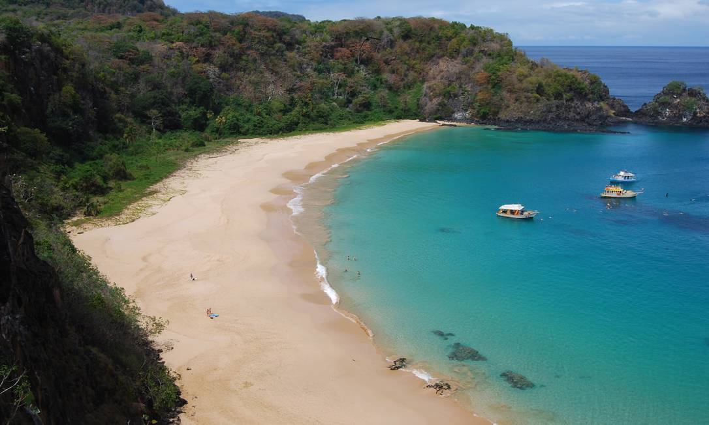

Praias

As praias mais famosas de Fernando de Noronha são a Baía dos Porcos e a Praia do Sancho. A primeira exibe um impressionante degradê de tons na água e é perfeita para fazer snorkel na maré baixa. A vizinha Baía do Sancho só é acessível pelo mar ou por uma escadinha instalada em uma fenda da falésia; mas o esforço vale a pena: é ali que você vai tomar o melhor banho de mar da viagem. Ambas ficam no Mar de Dentro, ou seja, são voltadas para a costa, assim como a tríade favorita dos surfistas – as praias da Cacimba do Padre, do Bode e da Conceição. No outro lado da ilha, a Praia do Leão e a Praia do Sueste são as estrelas do Mar de Fora; Sueste, aliás, convida a uma sessão de snorkeling com muitas tartarugas.